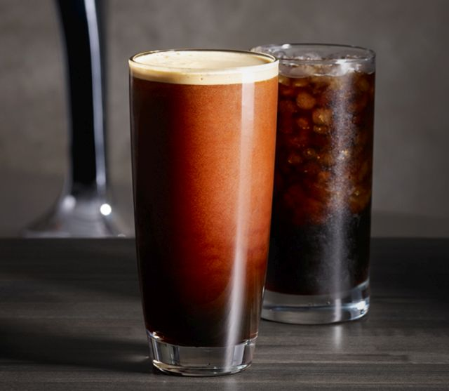

Cappuccinos are a fan favorite when visiting coffee shops. This is especially the case because of the latte art decorations that are often drawn into the steamed milk foam.

Affogato
Affogato technically is not a beverage, but it is still coffee-based. Affogato is actually a dessert that is meant to either be slowly sipped or enjoyed with a spoon.

Iced latte
An iced latte is a fairly simple drink to make, similar to an iced coffee. To make iced lattes, you just need to blend a chilled espresso drink, the desired amount of sweetener, milk, and ice.

Nitro Cold Brew
The nitro cold brew is similar to the original cold brew coffee, except it is made with nitrogen. creamy finish that is reminiscent of nitro draft beers like the Guinness.